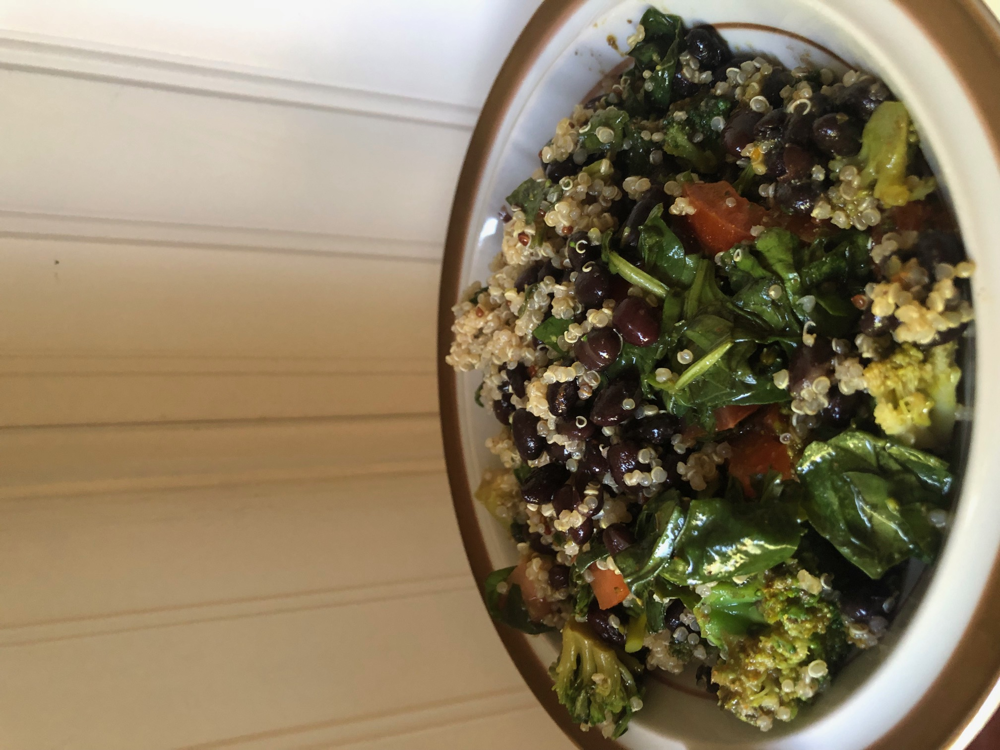

Vegan Health Bowl

Description
A healthy vegan bowl made up of quinoa, black beans, spinach, tomatoes,
brocolli, extra virgin olive oil, red wine vinegar, and spices. Serves 1
person.
Ingredients
- 1/4 cup black beans cooked
- 1/4 cup quinoa cooked
- 1 roma tomato
- 1/4 cup brocolli
- 1/2 cup spinach
- 1 tablespoon extra virgin olive oil
- 1 tablespoon red wine vinegar
- 1/4 teaspoon turmeric
- garlic powder
- onion powder
- cayene pepper powder
- lemon pepper
- oregano
Steps
- Cut up the spinach and put it in a bowl
- Dice the roma tomato and add it to the bowl
- Cut up the brocolli into bite sized pieces and add it to the bowl
- Frozen brocolli is fine, just be sure to thaw it first
- Add the turmeric and other spices to the bowl as desired
- Add the extra virgin olive oil to the bowl
- Add the red wine vinegar to the bowl
- Add the black beans
- Add the quinoa
-
Mix the ingredients together, microwave to desired temperature, and
enjoy!